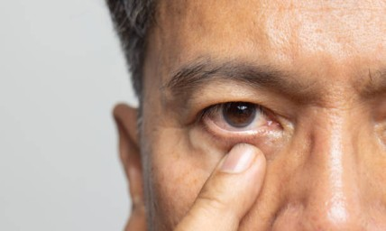

At Khanna Eye Centre, we provide comprehensive eye treatment in Delhi, covering diagnosis, treatment, surgery, and long-term management of a wide range of eye conditions. Our services are designed to address different vision needs, from refractive errors and cataracts to conditions affecting the cornea, retina, glaucoma, and more.
With experienced ophthalmologists and advanced diagnostic and surgical techniques, we focus on providing personalised care based on each patient's condition, visual needs, and overall eye health.
Book an AppointmentExplore our specialised services designed to help you understand, manage, and treat a wide range of eye conditions.

LASIK Surgery
Reduce your dependence on glasses or contact lenses with laser vision correction tailored to your eye's requirements.
Learn More
ICL Surgery
Implantable Collamer Lens (ICL) surgery offers an alternative for suitable patients who may not be candidates for LASIK.
Learn More
Cataract Surgery
Treatment for cataracts involves removing the cloudy natural lens and replacing it with an artificial intraocular lens to restore clearer vision.
Learn More
IOL Surgery
Intraocular lenses (IOLs) can be used to replace the eye's natural lens and help restore vision following lens-related conditions or surgery.
Learn More
Cornea Services
Comprehensive care for conditions affecting the cornea, including diagnosis, medical management, and appropriate surgical treatment.
Learn More
Retina Treatment
Diagnosis and treatment of conditions affecting the retina, with appropriate management based on the underlying condition.
Learn More
Diabetic Retinopathy Treatment
Specialised care for diabetic retinopathy, helping detect and manage retinal changes associated with diabetes.
Learn More
Glaucoma Treatment
Diagnosis, monitoring, and treatment of glaucoma with the aim of managing eye pressure and protecting the optic nerve.
Learn More
Paediatric Ophthalmology & Squint
Eye care for children, including assessment and treatment of squint and other conditions affecting children's vision and eye alignment.
Learn More
Oculoplasty Services
Medical and surgical care for conditions affecting the eyelids, tear ducts, orbit, and surrounding structures of the eye.
Learn More
Neuro-Ophthalmology Services
Specialised evaluation of vision and eye-related problems associated with the optic nerve and the connection between the eyes and brain.
Learn More
Uvea Services
Diagnosis and management of conditions affecting the uvea, the middle layer of the eye, including inflammatory and related eye disorders.
Learn More
Computer Vision Syndrome Treatment
Assessment and management of symptoms associated with prolonged digital screen use, including eye strain, dryness, and visual discomfort.
Learn MoreOur ophthalmology team brings extensive clinical experience across different areas of eye care and surgery.
From vision correction and cataract surgery to cornea, retina, glaucoma, and specialised eye care, our services cover a wide range of ophthalmic needs.
We use modern diagnostic and surgical techniques to support accurate assessment and appropriate treatment.
Every patient's eyes and visual needs are different. We focus on understanding your condition before recommending the appropriate course of treatment.
Not sure which service is right for your eye condition? Speak with our team for an evaluation and personalised guidance based on your vision and eye health.
You can book an appointment at Khanna Eye Centre, Nirmaan Vihar, by contacting the centre directly through phone or the appointment form on the website. During your consultation, an ophthalmologist will assess your eye condition, discuss suitable treatment options, and guide you through the next steps based on your individual needs.
Eye treatment includes medical, surgical, or laser-based procedures used to diagnose, manage, or correct different eye conditions. Depending on the problem, treatment may include medicines, glasses, laser procedures, or surgery. Common treatments include cataract surgery, LASIK, ICL, glaucoma treatment, and care for retinal and corneal conditions.
Eye surgery varies depending on the condition and procedure being performed. Most procedures begin with a detailed eye examination and are performed using specialised instruments, medication, laser technology, or surgical techniques. Your ophthalmologist will explain the procedure, preparation, anaesthesia, expected outcomes, and post-operative care before surgery.
The cost of eye treatment or surgery in Delhi NCR varies depending on the condition, procedure, technology used, type of lens or implant, and individual treatment requirements. A consultation and detailed evaluation are generally needed to determine the appropriate procedure and provide an accurate estimate of the treatment cost.
Potential complications depend on the specific eye condition and treatment. Some procedures may involve temporary discomfort, dryness, inflammation, infection, changes in vision, or other risks. Your ophthalmologist will explain the potential complications and individual risk factors before treatment, along with the steps taken to minimise associated risks.
After eye surgery, patients should follow their ophthalmologist's instructions carefully. This may include using prescribed eye drops, avoiding rubbing or touching the eyes, protecting the eyes from dust and water, and attending follow-up appointments. Avoid strenuous activities or swimming until your doctor confirms that they are safe.
Recovery time varies according to the type of eye surgery, your overall eye health, and the individual healing process. Some procedures allow patients to resume routine activities within a few days, while others require longer recovery. Your ophthalmologist will provide specific recovery instructions and tell you when normal activities can resume.